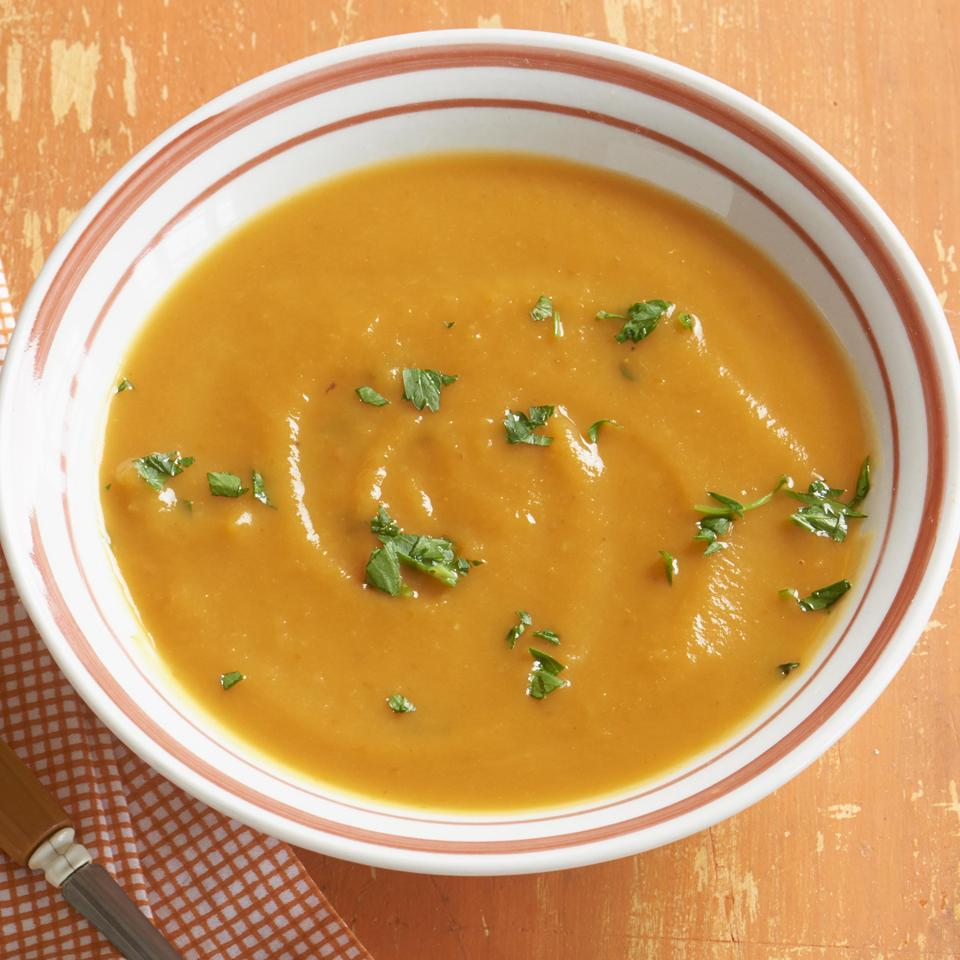

Pumpkin soup

This delicious, cream-like soup is served at our family's Thanksgiving dinner every year.
Ingridients:
- 6 cups chicken stock
- 1 1/2 teaspoons salt
- 4 cups pumpkin puree
- 1 teaspoon chopped fresh parsley
- 1 cup chopped onion
- 1/2 teaspoon chopped fresh thyme
- 1 clove garlic, minced
- 1/2 cup heavy whipping cream
- 5 whole black peppercorns
Steps:
- Heat stock, salt, pumpkin, onion, thyme, garlic, and peppercorns.
Bring to a boil, reduce heat to low, and simmer for 30 minutes uncovered.
- Puree the soup in small batches (1 cup at a time) using a food processor or blender.
- Return to pan, and bring to a boil again.
Reduce heat to low, and simmer for another 30 minutes, uncovered.
Stir in heavy cream. Pour into soup bowls and garnish with fresh parsley.
Main page
Go to top